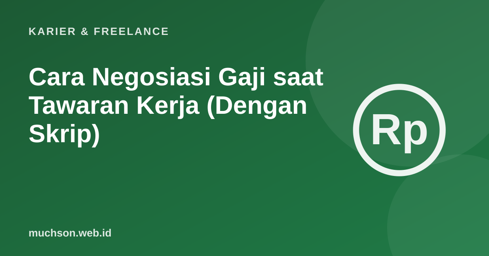

Beranda › Artikel › Karier & Freelance
Karier & FreelanceCara Negosiasi Gaji saat Tawaran Kerja (Dengan Skrip)
Banyak orang menerima tawaran gaji pertama karena takut terlihat serakah atau takut tawaran dibatalkan. Padahal negosiasi yang sopan dan berbasis data adalah hal wajar di banyak perusahaan. Selisih kecil di awal bisa berlipat selama bertahun-tahun karena kenaikan gaji sering dihitung dari angka awal.

Kenapa negosiasi penting
Langkah 1: riset kisaran pasar
- Lihat lowongan sejenis yang mencantumkan gaji.
- Gunakan survei gaji dari situs lowongan kerja dan perusahaan rekrutmen.
- Tanyakan ke rekan seprofesi atau komunitas, dengan menghormati privasi.
- Pertimbangkan kota, ukuran perusahaan, industri, dan tingkat pengalaman.
Hasilnya adalah tiga angka: batas bawah (angka minimal yang Anda terima), target (angka yang realistis dan Anda harapkan), dan angka pembuka (sedikit di atas target).
Langkah 2: pahami efek tawaran pertama
Penelitian Galinsky dan Mussweiler (2001) menunjukkan tawaran pertama dalam negosiasi cenderung menjadi "jangkar" yang menarik hasil akhir ke arahnya. Implikasinya: bila Anda sudah punya data pasar yang baik, menyebut angka berdasar data dapat membantu menjangkar diskusi. Bila belum yakin dengan kisaran perusahaan, Anda bisa lebih dulu menanyakan kisaran anggaran untuk posisi itu.
Angka pembuka harus bisa dibela dengan alasan: data pasar, pengalaman, dan nilai yang Anda bawa. Angka yang jauh di atas pasar tanpa alasan justru merusak kredibilitas.
Langkah 3: skrip yang bisa dipakai
| Situasi | Contoh kalimat |
|---|---|
| Ditanya ekspektasi di awal | "Berdasarkan riset saya untuk posisi serupa di Malang dengan pengalaman 3 tahun, kisarannya Rp8-9,5 juta. Saya terbuka mendiskusikan sesuai total paket." |
| Menerima tawaran di bawah target | "Terima kasih atas tawarannya, saya antusias dengan peran ini. Mengingat pengalaman saya di X dan kisaran pasar, apakah memungkinkan di angka Rp9 juta?" |
| Perusahaan bilang anggaran terbatas | "Saya memahami. Apakah ada ruang di komponen lain, misalnya tunjangan, hari kerja jarak jauh, atau peninjauan gaji setelah 6 bulan?" |
| Butuh waktu berpikir | "Boleh saya mengonfirmasi dalam dua hari kerja?" |
Yang bisa dinegosiasikan selain gaji pokok
- Tunjangan (transportasi, makan, internet, kesehatan).
- Fleksibilitas kerja jarak jauh atau jam kerja.
- Anggaran pelatihan dan sertifikasi.
- Tanggal mulai kerja.
- Peninjauan gaji lebih awal, misalnya setelah masa percobaan.
- Cuti tambahan.
Kesalahan yang dihindari
Tanya jawab
Apakah boleh menegosiasikan gaji fresh graduate?
Kapan waktu terbaik negosiasi gaji?
Bagaimana menjawab pertanyaan ekspektasi gaji?
Apakah tawaran bisa dibatalkan karena negosiasi?
Sumber dan bacaan lanjut
- Galinsky, A. D., & Mussweiler, T. (2001). First offers as anchors. Journal of Personality and Social Psychology
- Persiapan wawancara kerja developer (artikel terkait)